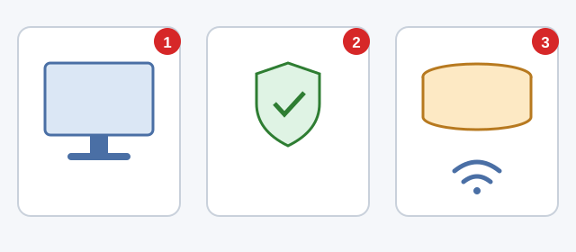
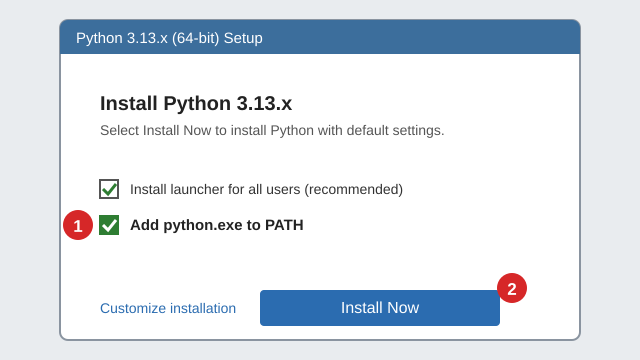
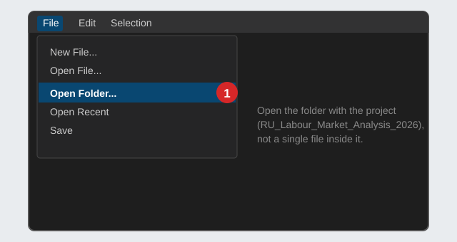
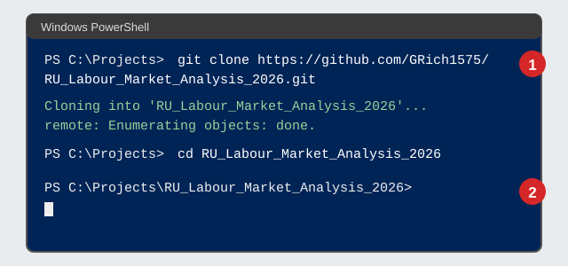

For: people who have never installed Python or Git and have never used a terminal.
Time: 1–2 hours (Python takes a few minutes; installing libraries up to 10 minutes).
You need: administrator rights on your computer and an internet connection.
Coordinator contact for setup questions: hseprojectcoordinator@gmail.com. Do not send tokens or passwords there.
Follow the steps in order. Each stage ends with a check. If a check fails, do not move on: fix the stage using the “If something went wrong” section at the end.
Progress (tick what you have done — this page does not save the ticks):

If the computer is a work or corporate machine and installing software is not allowed, tell the coordinator before you start. Do not install programs through workarounds.
You need Python 3.13 (or newer, but not older than 3.11). Download only from python.org, not from third-party sites.

Do not untick PATH. Without it, the python command will not be found. Fix: Settings → Apps → Installed apps → Python → Modify → tick “Add Python to environment variables” → Next → Install. Or uninstall Python and install it again with the tick.
Microsoft Store trap. On Windows 10/11 the command python may open the Microsoft Store instead of Python. To turn this placeholder off: Settings → Apps → Advanced app settings → App execution aliases. (In Russian Windows: «Псевдонимы выполнения приложений».) Switch off python.exe and python3.exe (see picture below).
Open PowerShell: Start → type powershell → Enter. Run:
python --version
Expected: Python 3.13.x. If you see “Python was not found” or the Microsoft Store opens, see “If something went wrong”.
Alternative: winget install Python.Python.3.13 in PowerShell. Then close and reopen PowerShell.
brew install python@3.13
Check: python3 --version. Expected: Python 3.13.x. On macOS always use python3, not python.
sudo apt update sudo apt install python3 python3-venv python3-pip
Check: python3 --version. For Fedora: sudo dnf install python3 python3-pip.
Git is the program that downloads the project from GitHub and keeps its change history.

Do not choose Vim. If Git opens Vim (a black screen with unfamiliar commands), press Esc, type :q! and press Enter.
Check: close and reopen PowerShell, then run:
git --version
Expected: git version 2.x.x.
brew install git # macOS sudo apt install git # Ubuntu / Debian
On macOS, the first run of git may offer to install Command Line Tools — agree. Check: git --version.
VS Code is an editor where you can comfortably open and read the project files.
You open the project folder later (Stage 5 or after cloning): menu File → Open Folder…, then choose the whole project folder.

Open the whole project folder, not one file from it. Otherwise terminal commands inside VS Code will not work correctly.
project-clone); Expiration — 30 days; tick the scope repo. Click “Generate token” (item 1 in the picture).
Do not send your token or password in chats, to the coordinator, into project files or into screenshots. The token is the key to your account.
Alternative: in VS Code click the “Accounts” icon (bottom left) → “Sign in with GitHub” and sign in through the browser. Then you do not need to type a token.
C:\Projects (Windows) or ~/Projects (macOS/Linux).
powershell into the address bar and press Enter.git clone https://github.com/GRich1575/RU_Labour_Market_Analysis_2026.git
cd RU_Labour_Market_Analysis_2026

git clone command. 2 — after cd, the prompt path ends with the project folder name.Do not clone the project inside another project, and do not run git clone a second time into the same place. If the folder already exists, Git reports “already exists”. In that case just run cd into the existing folder.
A virtual environment is a separate folder .venv inside the project that holds the libraries for this project only, so they do not mix with other programs on your computer. The .venv folder is not uploaded to GitHub (it is listed in .gitignore).
python -m venv .venv
Y:
Set-ExecutionPolicy -Scope CurrentUser RemoteSigned
.\.venv\Scripts\Activate.ps1
When the environment is active, (.venv) appears at the start of the line (item 1 in the picture).

(.venv) at the start of the line means the environment is active. Without it, libraries are installed in the wrong place.Do not run pip install until you see (.venv). Do not run PowerShell “as administrator” to install libraries.
If you see “cannot be loaded because running scripts is disabled”, repeat step 2. If the error remains, the organisation’s policy is blocking it: tell the coordinator and do not change the policy to Unrestricted.
If .venv was created wrongly (errors during installation, wrong Python), delete the folder and create it again. In PowerShell: Remove-Item -Recurse -Force .venv. Run this only inside the project folder.
python3 -m venv .venv source .venv/bin/activate
The environment is active when (.venv) appears at the start of the line. On these systems do not use sudo pip.
(.venv).python -m pip install --upgrade pip pip install -r requirements.txtInstallation takes a few minutes. Do not close the window until the prompt with
(.venv) appears again.python -c "import pandas, yaml, requests; print('Готово: pandas', pandas.__version__)"
Expected: a line Готово: pandas 3.x.x. (The word “Готово” means “Ready” and is part of the project's check message.)python --versionExpected:
Python 3.13.x (or newer, not older than 3.11).
If the check shows “No module named …”, the environment is not active. Activate it (Stage 6, step 3) and repeat the check.
| What you see | Cause | What to do |
|---|---|---|
python not found / Microsoft Store opens | PATH not ticked, or the Store alias is on | Stage 1: reinstall Python with the PATH tick; switch off the python.exe and python3.exe aliases. Close and reopen PowerShell |
git not recognised | Terminal was opened before Git was installed | Close and reopen the terminal. If that does not help, reinstall Git (Stage 2) |
cannot be loaded because running scripts is disabled | Running scripts is not allowed | Stage 6, step 2: Set-ExecutionPolicy -Scope CurrentUser RemoteSigned |
No module named 'pandas' | Environment not active, or libraries not installed | Check for (.venv) at the start of the line; activate the environment and run pip install -r requirements.txt again |
destination path ... already exists | The project folder is already downloaded | Do not clone again: run cd RU_Labour_Market_Analysis_2026 |
| Git asks for a password and your password is rejected | GitHub does not accept account passwords | Use the token (Stage 4) instead of the password |
Permission denied / externally-managed-environment (macOS/Linux) | Trying to install libraries into the system Python | Do not use sudo pip. Activate .venv and repeat the installation |
| Error while installing libraries, network failure | Unstable internet or proxy | Run pip install -r requirements.txt again. If it fails again, send the last 10 lines of output to the coordinator (remove any tokens first) |
Optional task: open config/sources.yaml in VS Code, find the source cbr_key_rate and read the fields enabled and data_2026. Then run git status in the terminal and write down the result.
More details: docs/prerequisites.md, cheat sheets in docs/cheatsheets/. The Russian version of this guide: setup_guide_ru.html. Do not publish logins, tokens or passwords.